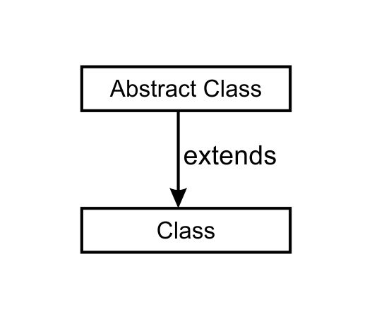
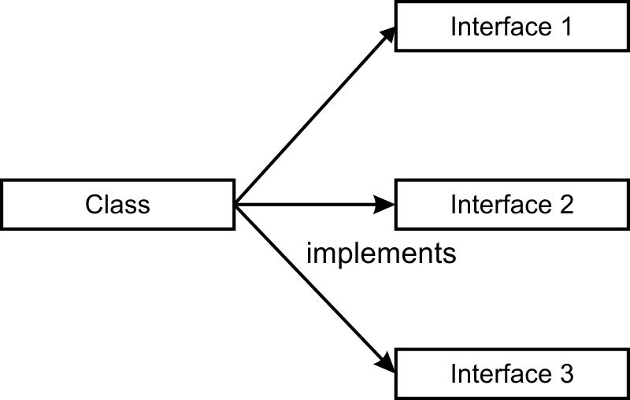
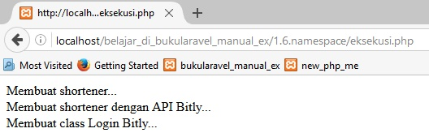

Konsep Dasar¶
Laravel memiliki struktur pembanngun yang cukup kompleks, oleh karena itu dalam bagian ini akan sedikit dijelaskan mengenai beberapa hal dasar yang menyangkut ke framework laravel.
Table of Contents
JSON (JavaScript Object Notation)¶
JSON adalah format data yang digunakan untuk bertukar data antar bahasa pemrograman.
Awalnya JSON ini hanya digunakan di Javascript.
Tapi, seiring waktu, JSON juga digunakan oleh bahasa pemrograman yang lain.
Syntax dasar:
{
key1 : value1,
key2 : {
key3 : value3,
key4 : value4
}
}
Tipe Data Dalam JSON
| Tipe Data | Penjelasan |
|---|---|
| Number | berisi bilangan bulat atau desimal. |
| String | teks yang diapit tanda petik. |
| Boolean | Isian benar TRUE atau salah FALSE. |
| Array | Data terurut yang diapit [ ] dan dibatasi koma. Larik bisa berisi gabungan tipe data yang lain. |
| Object | Data tidak terurut yang diapit { } dan dibatasi koma. Setiap elemen object berisi key dan value dibatasi :. |
| Null | nilai kosong, diisi dengan keyword null. |
Contoh data JSON:
{
"nomor_antrian" : 20,
"nama" : "Firman",
"menikah" : false,
"hobi" : [
"memancing",
"berenang",
"bersepeda"
],
"alamat" : {
"jalan" : "Pakuan No. 12",
"kota" : "Bandung",
"provinsi" : "Jawa Barat",
"kode_pos" : "43655"
},
"telpon" : {
{
"jenis" : "rumah",
"nomor" : "022-345352"
},
{
"jenis" : "mobile",
"nomor" : "0878-23422321"
}
},
"istri" : null
}
Note
Data dalam JSON berisikan object dimana di dalamnya hanya terdapat key dan value, namun value dari key bisa juga bertipe data object.
Anonymous Function (Closure)¶
Anonymous function adalah function yang tidak memiliki nama.
Anonymous function biasa digunakan pada callback(parameter yang berisi/value function).
Anonymous juga dapat di-assign ke dalam variabel, dan variabel tersebut dapat dipanggil layaknya sebuah function.
Sebelum lebih jauh membahas mengenai Closure, maka perlu sedikit pengetahuan dasar mengenai function biasa(Regular Function).
Regular Function¶
- Panggilan secara
1 2 3 4 5 6 7 8 | $panggilan_prefix = "Mas";
$nama = "Ryan";
function panggilan($panggilan_prefix,$nama) {
return $panggilan_prefix." ".$nama;
}
echo panggilan($panggilan_prefix,$nama);
|
hasil:
Mas Ryan
- Passing Function ke dalam parameter.
1 2 3 4 5 6 7 8 9 10 11 12 | $panggilan_prefix = "Mas";
$nama = "Ryan";
function panggilan($panggilan_prefix,$nama) {
return $panggilan_prefix." ".$nama;
}
function memanggil($panggilan) {
return $panggilan.", Pasti bisa!!!";
}
echo memanggil(panggilan($panggilan_prefix, $nama));
|
hasil:
Mas Ryan, Pasti bisa!!!
Note
Dalam proses diatas, maka yang akan diakses pertama kali adalah function yang menjadi parameter (function panggilan)
Dari function panggilan tersebut akan menghasilkan return value berupa string dan akan menjadi parameter di function memanggil
- Function tidak dapat mengakses variabel selain yang ada di local function
1 2 3 4 5 6 7 8 | $panggilan_prefix = "Mas";
$nama = "Ryan";
function panggil() {
return $panggilan_prefix." ".$nama;
}
echo panggil();
|
hasil:
Notice: Undefined variable: panggilan_prefix in C:\xamppcoll\183\htdocs\new_php_me\function\10.closure.php on line 32
Notice: Undefined variable: nama in C:\xamppcoll\183\htdocs\new_php_me\function\10.closure.php on line 32
- Default value pada parameter function dapat menghindari adanya error tidak dapat diaksesnya local variabel
1 2 3 4 5 | function xxx($panggilan_prefix = "Mas", $nama = "Ryan") {
return $panggilan_prefix." ".$nama;
}
echo xxx();
|
hasil:
Mas Ryan
Note
seperti yang diketahui bahwa untuk dapat mengakses variabel di function(bersifat “local scope” memerlukan adanya passing ke dalam parameter dan saat pemanggilan function diberikan argument).
Anonymous Function (Closure)¶
- Anonymous funtion juga dapat dipass dengan global variable
1 2 3 4 5 6 7 8 | $panggilan_prefix = "Mas";
$nama = "Ryan";
$panggilan = function($panggilan_prefix,$nama) {
return $panggilan_prefix." ".$nama;
};
echo $panggilan($panggilan_prefix,$nama);
|
hasil:
Mas Ryan
- Passing closure ke dalam paramter regular function
1 2 3 4 5 6 7 8 9 10 11 12 | $panggilan_prefix = "Mas";
$nama = "Ryan";
$panggilan = function($panggilan_prefix,$nama) {
return $panggilan_prefix." ".$nama;
};
function memanggil($panggilan) {
return $panggilan.", Pasti Bisa!!!";
}
echo memanggil($panggilan($panggilan_prefix,$nama));
|
hasil:
Mas Ryan, Pasti Bisa!!!
- Anonymous function juga tidak dapat mengakses variabel selain yang ada di local function
1 2 3 4 5 6 7 8 | $panggilan_prefix = "Mas";
$nama = "Ryan";
$panggil = function() {
return $panggilan_prefix." ".$nama;
};
echo $panggil();
|
hasil:
Notice: Undefined variable: panggilan_prefix in C:\xamppcoll\183\htdocs\new_php_me\function\11.closure.php on line 23
Notice: Undefined variable: nama in C:\xamppcoll\183\htdocs\new_php_me\function\11.closure.php on line 23
- Namun anonymous function dapat menggunakan closure untuk dapat menggunakan global variabel menjadi local variabel (closure menggunakan syntax
use)
1 2 3 4 5 6 7 8 9 | $panggilan_prefix = "Mas";
$nama = "Ryan";
$xxx = function() use($panggilan_prefix,$nama){
return $panggilan_prefix." ".$nama;
};
//Kita dapat memanggil anonymous function tanpa memberikan adanya argument/parameter, namun masih tetap dapat mengakses global variable
echo $xxx();
|
hasil:
Mas Ryan
Note
anonymous function dapat mengakses global variabel dimana kita tidak akan memberikan argument global variabel tersebut saat pengaksesan function
Hint
Kesimpulan
Function anonymous adalah suatu function yang tidak dapat dipanggil secara langsung, kecuali dengan cara di-passing ke dalam variabel atau dijadikan ke dalam callback(parameter berupa function).
Closure adalah bentuk anonymous function yang dapat mengakses variabel global(parent scope) tanpa memberikan adanya parameter dan argument variabel global ke dalam anonymous function tersebut.
Studi kasus penggunaan anonymous function/closure pada parameter/argument¶
PHP memiliki function array_walk, yaitu function yang akan mengakses array dengan berulang (iteration) mirip seperti foreach namun dalam bentuk function.
Berikut format syntas dari function array_walk:
bool array_walk ( array &$array , callable $callback [, mixed $userdata = NULL ] )
Keterangan parameter
| parameter | Penjelasan |
|---|---|
| $array | Array yang akan dilakukan iteration (perulangan) |
| $callback | Anonymous function yang akan digunakan dalam memanipulasi array (setiap perulangan, akan menggunakan function ini),
perlu diketahui bahwa dalam function ini diharuskan memiliki 2 parameter, dimana parameter 1 adalah value dan paramter kedua sebagia key |
| $userdata | Jika parameter ini diisi maka ini akan menjadi parameter ketiga dalam anonymous function dari parameter 2 |
Contoh penggunaan dalam anonymous function
1 2 3 4 5 6 7 8 9 10 11 12 13 14 15 16 17 18 19 20 21 22 23 24 25 | <?php
$buah = [
"a" => "apel",
"b" => "berry",
"c" => "cherry"
];
echo "struktur array awal";
echo "<pre>";
print_r($buah);
echo "</pre>";
echo "=================================================================================="."<br>";
function pemberianPrefix(&$value, $key, $prefix) {
$value = "$prefix $value";
}
array_walk($buah,'pemberianPrefix',"buah");
echo "struktur array setalah ada prefix";
echo "<pre>";
print_r($buah);
echo "</pre>";
?>
|
hasil:
struktur array awal
Array
(
[a] => apel
[b] => berry
[c] => cherry
)
==================================================================================
struktur array setalah ada prefix
Array
(
[a] => buah apel
[b] => buah berry
[c] => buah cherry
)
Contoh penggunaan dalam ``Closure``
1 2 3 4 5 6 7 8 9 10 11 12 13 14 15 16 17 18 19 20 21 | <?php
$minimal = 75;
$dataNilai = [
["nama"=>"Rangga", "nilai"=>90],
["nama"=>"Bisma", "nilai"=>80],
["nama"=>"Dicky", "nilai"=>40],
["nama"=>"Morgan", "nilai"=>75],
];
array_walk($dataNilai, function($value, $key) use ($minimal) {
echo "Siswa : " . $value['nama'] . "<br>";
echo "Nilai : " . $value['nilai'] . "<br>";
echo "Status : ";
if ($value['nilai'] >= $minimal) {
echo "Lulus<br>";
}
else {
echo "Tidak Lulus<br>";
}
echo "================================"."<br>";
});
|
hasil:
Siswa : Rangga
Nilai : 90
Status : Lulus
================================
Siswa : Bisma
Nilai : 80
Status : Lulus
================================
Siswa : Dicky
Nilai : 40
Status : Tidak Lulus
================================
Siswa : Morgan
Nilai : 75
Status : Lulus
================================
PHP 5 Autoloader¶
Dalam PHP 5, terdapat fitur baru dalam menyertakan (include) suatu file yang mana file tersebut dalam bentuk class.
Fitur ini terdapat pada function spl_autoload_register().
function spl_autoload_register() akan dijalankan begitu adanya instansiasi class.
1 2 3 4 5 6 7 8 9 | <?php
function jika_ada_instansiasi($class){
echo "ada instansiasi daripada class ".$class;
}
spl_autoload_register('jika_ada_instansiasi');
new A;
?>
|
hasil:
ada instansiasi daripada class A
Note
contoh diatas sebenarnya sudah cukup jelas dalam mempresentasikan function spl_autoload_register
yaitu akan dijalankan begitu adanya instansiasi suatu class, dan parameter callback nya adalah nama instansiasi
hanya saja terdapat keanehan disini
ketika terdapat adanya class (deklarasi class), maka function spl_autoload_register, tidak akan dieksekusi.
jika misalkan terdapat syntax class seperti berikut:
class A {}
maka syntax “new A” tidak akan menjalankan function spl_autoload_register
Penggunaan Autoloader¶
Autoloader akan digunakan untuk mempermudah dalam penyertaan(include) file yang berisikan class.
Misalkan terdapat 2 class dan 1 file eksekusi daripada 2 class tersebut, tanpa adanya function spl_autoload_register, maka berikut adalah cara penggunaannya
file Class_a.php
1 2 3 4 5 6 7 | <?php
class Class_a {
public function method_class_a() {
return "value_method_a";
}
}
?>
|
file Class_b.php
1 2 3 4 5 6 7 | <?php
class Class_b {
public function method_class_b() {
return "value_method_b";
}
}
?>
|
file eksekusi.php
1 2 3 4 5 6 7 8 9 10 | <?php
include "class_a.php";
$pertama = new Class_a;
echo $pertama->method_class_a();
echo "<br>";
include "class_b.php";
$kedua = new Class_b;
echo $kedua->method_class_b();
?>
|
penggunaan include untuk menginstansiasi class ini sangatlah sulit apabila class yang diinclude berada pada lebih dari 100 file class.
Maka dari itu function spl_autoload_register ini akan digunakan, penggunaannya adalah sebagai berikut:
file eksekusi2.php
1 2 3 4 5 6 7 8 9 10 11 | <?php
spl_autoload_register(function ($class) {
include $class.'.php';
});
$pertama = new class_a;
echo $pertama->method_class_a();
echo "<br>";
$kedua = new class_b;
echo $kedua->method_class_b();
?>
|
Attention
perlu diketahui, pembuatan class biasanya disimpan pada satu file yang mana nama filenya adalah nama classnya,
Penyertaan file dari beberapa direktori¶
Jika semisal file yang disertakan berada pada folder tertentu, kita dapat mengubahnya dengan memberikan “prefix” atau “suffix” yang akan menuju file path tersebut.
file class/Class_c.php
1 2 3 4 5 6 7 | <?php
Class Class_c {
public function __construct() {
echo "Method Class_c";
}
}
?>
|
file class/Class_d.php
1 2 3 4 5 6 7 | <?php
Class Class_d {
public function __construct() {
echo "Method Class_d";
}
}
?>
|
file eksekusi3.php
1 2 3 4 5 6 7 8 9 | <?php
spl_autoload_register(function($class){
include "class/".$class.".php";
});
$c = new Class_c();
echo "<br>";
$d = new Class_d();
?>
|
Caution
Dalam beberapa kasus seringkali kita membutuhkan suatu file yang berada pada folder tertentu, yang tentu saja tidak kesemuanya berada dalam kesatuan folder(berada pada folder yang terpisah).
Untuk hal tersebut kita akan mempelajarinya pada materi berikutnya, pada namespace.
PHP 5 Abstract dan Interfaces¶
Abstract Class¶
Abstract class dan abstract method adalah suatu cara dalam mengharuskan suatu class turunannya(inheritance) untuk menggunakan setiap abstract method nya (dan parameternya jika ada).
Abstract class dan abstract method dapat dipahami sebagai kerangka dasar yang mana akan menjadi dasar suatu aplikasi.
Caution
Mengapa menggunakan abstract class dan abstarct method ???
Karena penggunaan suatu aplikasi dalam menjalankan fungsi-fungsinya, biasanya menggunakan suatu metode yang sama namun dengan cara yang berbeda.
Semisal seorang pembeli ingin membeli barang secara online pada suatu website, dalam website tersebut memberikan 2 cara dalam melakukan pembayaran, yang pertama dengan transfer melalui internet banking sedangkan cara kedua dengan PayPal.
Tentu keduanya memiliki kesamaan metode yaitu pembayaran, hanya saja cara dalam keduanya berbeda(dan tentu juga akan menghasilkan value yang berbeda).
Sebelum dijelaskan alasan yang tepat mengapa menggunakan abstract class dan abstract method, mari kita sejenak memahami konsep class secara luas dibawah ini.
Konsep Class dasar¶
Class adalah kumpulan property dan method yang memiliki kesatuan kesamaan.
Object merupakan bentuk nyata daripada class, atau dapat dikatakan suatu bentuk yang tercipta dari class yang sudah ada.
Di dalam suatu aplikasi, akan dibutuhkan beberapa sumber-sumber yang akan diolah (dikumpukan menurut kebutuhan dan diproses menjadi suatu value),
Sumber-sumber antara satu dengan yang lainnya tentu tidaklah sama.
Sumber tersebut berupa object (yang berasal daripada class kerangka nya).
Intinya setiap class tidak akan memiliki property atau method yang sudah kompleks(mencakup semuanya), namun hanya berisikan dasar-dasarnya.
Yang kemudian akan dikumpulkan dengan sumber lain(object daripada instansiasi class lain) yang nantinya akan diproses dan menghasilkan value.
Kita contohkan aplikasi pembelian menggunakan internet banking.
pada aplikasi tersebut kita punya sumber pembeli dan bank.
Artinya kita akan memiliki 2 class yaitu class Pembeli dan class Bank.
Mari kita telaah lebih jauh,
Apakah antara class Pembeli dan class Bank memiliki kesamaan yang diturunkan(inheritance/pewarisan) ?? Tentu jawabnya TIDAK, yang artinya tidak akan ada keyword extends disini.
namun apakah kedua class saling memiliki keterikatan ??? jawabnya “YA”
Seperti pembeli memiliki deposit di bank, yang mana dalam deposit tersebut akan disimpan sebagai saldo, dan dapat berkurang jika dilakukan adanya pembelian.
mungkin berikut gambaran tentang property dan method dari kedua class.
class Pembeli
property => ‘nama’
method => ‘beli’
class Bank
property => ‘saldo’
method => ‘deposit,kredit,catatTransaksi dan cekSaldo’
kemudian masalah muncul disini, yaitu jika memang dipisah menjadi 2 class, kemudian bagaimana kita bisa melakukan transaksi yang melibatkan 2 object(dari instansiasi 2 class) tersebut, mengingat tidak ada keterikatan secara langsung(kedua class tidak saling mewarisi dan dipastikan memang berada dalam 2 class/tidak satu class yang kompleks).
Maka satu class satu membutuhkan class lain, ini disebut sebagai depedency Injection.
Dari kasus diatas, maka bank membutuhkan pembeli untuk melakukan pembelian dan bukan pembeli membutuhkan bank, maka dari itu object bank akan dimasukkan ke dalam object pembeli.
Maksudnya kita akan membuat object bank ke dalam object pembeli dan selanjutnya biarkan object pembeli itu melakukan beberapa method pada object bank, dan bukan membuat object pembeli ke dalam object bank, ilustrasi mudahnya adalah berikut:
//jika dari sisi pembeli
$ryan->beli();
//artinya ryan (pembeli) akan melakukan transaksi, transaksi tersebut akan melibatkan object ``bank``, dan bukan bank yang melakukan transaksi
//jika dari sisi bank
$mandiri->
//weits mau kemana nih object mandiri;
Berikut contoh konkritnya
file BNI.php
1 2 3 4 5 6 7 8 9 10 11 12 13 14 15 16 17 18 19 20 21 22 23 24 25 26 27 28 29 30 31 32 33 34 | <?php
class BNI {
private $saldo;
public function __construct($pin) {
// saat menggunakan bank, harus mengisi PIN dahulu
if ($pin == '12345') {
echo "Berhasil mengaktifkan Kartu BNI!<br>";
}
else {
$pesan = "PIN yang Anda masukkan salah :(";
throw new Exception($pesan);
}
}
private function catatTransaksi($jenis, $jumlah) {
echo "Mencatat transaksi $jenis sejumlah $jumlah ke Buku Tabungan.<br>";
}
public function kredit($jumlah) {
$this->catatTransaksi('transfer keluar', $jumlah);
$this->saldo -= $jumlah;
}
public function deposit($jumlah) {
$this->catatTransaksi('deposit dana', $jumlah);
$this->saldo += $jumlah;
}
public function cekSaldo() {
return $this->saldo;
}
}
|
file Pembeli.php
1 2 3 4 5 6 7 8 9 10 11 12 13 14 15 16 17 18 19 20 21 22 | <?php
include "BNI.php";
class Pembeli {
private $nama;
private $bni;
//type hint/type declaration pada $bni adalah object "BNI"
public function __construct($nama = "Seseorang", BNI $bni) {
$this->nama = $nama;
//REMEMBER parameter $bni yang akan diberikan sebagai argument adalah object, sehingga nantinya property "bni"(yang bersifat private) adalah object dari object "bni"(class BNI)
$this->bni = $bni;
}
public function beli($nama = "Barang", $harga = 0) {
//REMEMBER syntax "$this->bni" adalah object "bni" dari instansiasi class "BNI",
$this->bni->kredit($harga);
echo "Berhasil melakukan pembelian $nama seharga Rp$harga.<br>";
echo "Terima kasih $this->nama :)<br>";
}
}
|
file beli-pakai-bni.php
1 2 3 4 5 6 7 8 9 10 11 12 13 14 15 16 17 | <?php
require_once "Pembeli.php";
// Melakukan pembelian dengan BNI
try {
$bni_ryan = new BNI('12345');
//karena belum ada aplikasi fungsi deposit dari akun(harusnya pada awalnya, nasabah menyimpan deposit dan bank menyimpannya), yah anggap saja method ini sebagai contoh penyimpan deposit aja
//dan tentu jangan membuat method "simpan_deposit" pada class "Pembeli", karena sudah jelas dinamakan class "Pembeli" maka tidak mungkin ada method "simpan_deposit" (kecuali aklau classnya adlaah "nasabah")
$bni_ryan->deposit(100000);
//menginject object "bni_ryan" ke dalam object ryan(sebagai pembeli)
$ryan = new Pembeli("Ryan", $bni_ryan);
//melakukan transaksi
$ryan->beli("Sepatu - Bata", 80000);
echo "Saldo terakhir Rp".$bni_ryan->cekSaldo()."<br>";
}
catch (Exception $e) {
echo $e->getMessage()."<br>";
}
|
hasil:
Berhasil mengaktifkan Kartu BNI!
Mencatat transaksi deposit dana sejumlah 100000 ke Buku Tabungan.
Mencatat transaksi transfer keluar sejumlah 80000 ke Buku Tabungan.
Berhasil melakukan pembelian Sepatu - Bata seharga Rp80000.
Terima kasih Ryan :)
Saldo terakhir Rp20000
Alasan penggunaan abstract class¶
Alasan utama pengguanaan abstract class adalah jika apabila terdapat suatu cara lain yang menggunakan method yang sama dengan class lain.
Misalkan dari kasus diatas, aplikasi pembelian (online/website) ternyata selain menggunakan pembayaran melalui internet banking juga menawarkan adanya pembayaran melalui PayPal, untuk memberikan cara lain bagi para pembeli yang memang kebetulan tidak memiliki akun BNI namun memiliki akun PayPal.
Pembayaran dengan PayPal ini tidaklah berbeda dengan pembayaran dengan bank BNI, seperti adanya method yang mempengaruhi deposit, kredit dan lainnya, namun apakah caranya sama ??? tentu tidak, karena ternyata dengan pembayaran PayPal dibutuhkan adanya Login dan tentu konfirmasi/laporan pembelian dalam bentuk email.
Selain itu cara dalam kredit ataupun deposit juga mungkin berbeda, sehingga tidak mungkin melakukan inheritance (extends) kepada class BNI.
Meskipun memang ada method yang sama (kredit, deposit, cekSaldo) namun apabila statement(isi/caranya) berbeda apa ya mau di-extends kemudian di-override ???
Maka dari itu dibutuhkan adanya abstract class dan abstract method sehingga kedua class (BNI dan PayPal) menggunakan method yang sama namun isi statement-nya berbeda.
Tapi, tunggu dulu….
Kalaupun begitu bukankah kita bisa saja membuat class biasa dengan method kosongan, yang nantinya class tersebut diwariskan pada class BNI dan PayPal, dan juga method kosongnya dapat di-override.
Ya cara ini bisa saja, namun ingat Abstract class tidak dapat di-instansiasi sedangkan class biasa dapat diinstansiasi, sedangkan kita tahu bahwa definisi class sebelumnya adalah kumpulan property dan method yang memiliki kesatuan kesamaan.
Tentu penggunaan class biasa dan method kosong tidak akan baik secara teknis untuk dijadikan dependency injection.
Berikut contoh konkritnya:
file Pembeli.php
1 2 3 4 5 6 7 8 9 10 11 12 13 14 15 16 17 18 19 | <?php
class Pembeli {
private $nama;
private $payment;
public function __construct($nama = "Seseorang", $payment) {
$this->nama = $nama;
$this->payment = $payment;
}
public function beli($nama = "Barang", $harga = 0) {
if ($this->payment->cekSaldo() < $harga) {
echo "Uang tidak cukup\n";
} else {
$this->payment->kredit($harga);
echo "Terima kasih $this->nama :)\n";
echo "Berhasil melakukan pembelian $nama seharga Rp".number_format($harga)."<br>";
}
}
}
|
file MetodePembayaran.php
1 2 3 4 5 6 7 8 9 | <?php
abstract class PaymentMethod {
public function cekNamaPembayaran() {
return "Anda melakukan pembayaran dengan ".get_class($this)."\n";
}
abstract public function kredit($jumlah);
abstract public function deposit($jumlah);
abstract public function cekSaldo();
}
|
file DebitBNI.php
1 2 3 4 5 6 7 8 9 10 11 12 13 14 15 16 17 18 19 20 21 22 23 24 25 26 27 28 29 30 31 32 | <?php
require_once "PaymentMethod.php";
class DebitBNI extends PaymentMethod {
private $saldo;
public function __construct($pin) {
// ceritanya cek PIN ke database
if ($pin == '12345') {
echo "Berhasil mengaktifkan Kartu Debit!"."<br>";
} else {
$pesan = "PIN yang Anda masukkan salah :(";
throw new Exception($pesan);
}
}
private function catatTransaksi($jenis, $jumlah) {
echo "Mencatat transaksi $jenis sejumlah $jumlah ke Buku Tabungan."."<br>";
}
public function kredit($jumlah) {
$this->catatTransaksi('transfer keluar', $jumlah);
$this->saldo -= $jumlah;
}
public function deposit($jumlah) {
$this->catatTransaksi('deposit dana', $jumlah);
$this->saldo += $jumlah;
}
public function cekSaldo() {
return $this->saldo;
}
}
|
file beli-pakai-debit-BNI.php
1 2 3 4 5 6 7 8 9 10 11 12 13 14 | <?php
require_once "DebitBNI.php";
require_once "Pembeli.php";
// Melakukan pembelian dengan DebitBNI
try {
$paymentMethod = new DebitBNI("12345");
$paymentMethod->deposit(20000000);
$rahmat = new Pembeli("Morgan", $paymentMethod);
$rahmat->beli("Sepatu Dance", 250000);
echo "Saldo terakhir Rp".number_format($paymentMethod->cekSaldo())."<br>";
echo $paymentMethod->cekNamaPembayaran();
} catch (Exception $e) {
echo $e->getMessage()."<br>";
}
|
file Paypal.php
1 2 3 4 5 6 7 8 9 10 11 12 13 14 15 16 17 18 19 20 21 22 23 24 25 26 27 28 29 30 31 32 33 34 35 36 | <?php
require_once 'PaymentMethod.php';
class Paypal extends PaymentMethod {
private $balance;
private $email;
public function __construct($email, $password) {
// Ceritanya ini akses ke database
if ($email == "morgan@gmail.com" & $password == "12345") {
$this->email = $email;
echo "Berhasil login ke Paypal!"."<br>";
} else {
$pesan = "User ada user dengan username/password tersebut :(";
throw new Exception($pesan);
}
}
private function kirimNotifikasi($pesan = "Informasi penting") {
echo "Mengirim email notifikasi $pesan ke $this->email "."<br>";
}
public function kredit($jumlah) {
$this->kirimNotifikasi('pengeluaran dana');
$this->balance -= $jumlah;
}
public function deposit($jumlah) {
$this->kirimNotifikasi('penerimaan dana');
$this->balance += $jumlah;
}
public function cekSaldo() {
return $this->balance;
}
}
|
file beli-pakai-paypal.php
1 2 3 4 5 6 7 8 9 10 11 12 13 14 15 | <?php
require_once "Paypal.php";
require_once "Pembeli.php";
// Melakukan pembelian dengan paypal
try {
$paymentMethod = new Paypal("morgan@gmail.com", "12345");
$paymentMethod->deposit(12000000);
$pembeli = new Pembeli("Morgan", $paymentMethod);
$pembeli->beli("Poster Smash Full Color", 100000);
echo "Saldo terakhir Rp".number_format($paymentMethod->cekSaldo())."<br>";
echo $paymentMethod->cekNamaPembayaran();
} catch (Exception $e) {
echo $e->getMessage()."<br>";
}
?>
|
hasil:
file **beli-pakai-debit-bni.php**
Berhasil mengaktifkan Kartu Debit!
Mencatat transaksi deposit dana sejumlah 20000000 ke Buku Tabungan.
Mencatat transaksi transfer keluar sejumlah 250000 ke Buku Tabungan.
Terima kasih Morgan :) Berhasil melakukan pembelian Sepatu Dance seharga Rp250,000
Saldo terakhir Rp19,750,000
Anda melakukan pembayaran dengan DebitBNI
file **beli-pakai-paypal.php**
Berhasil login ke Paypal!
Mengirim email notifikasi penerimaan dana ke morgan@gmail.com
Mengirim email notifikasi pengeluaran dana ke morgan@gmail.com
Terima kasih Morgan :) Berhasil melakukan pembelian Poster Smash Full Color seharga Rp100,000
Saldo terakhir Rp11,900,000
Anda melakukan pembayaran dengan Paypal
Inteface¶
Interface memiliki kesamaan dengan class, yaitu setiap class yang menggunakan interface``(disebut ``implements) harus me-override method yang ada pada interface.
Perbedaannya adalah satu class hanya dapat mewarisi(inheritance/extends) satu class abstract, seperti contohnya class kucing hanya mewarisi class HewanMamalia.
Namun satu class dapat menggunakan(implements) lebih dari 1 interface, seperti contohnya class kucing dapat menggunakan interface cakar, dan dalam interface cakar tersebut memiliki method mencakar.
Dan class kucing ini juga dapat menggunakan interface taring, dan dalam interface taring tersebut memiliki method menggigit.
berikut ilstrasi dalam gambar
 Penggunaan Interface¶
Interface memiliki banyak kegunaan yang hampir sama dengan abstract class, hanya saja class yang menggunakan/me-implements interface bisa lebih dari 1 interface.
Namun dalam bahasan ini hanya dijabarkan penggunaan interface secara sederhana.
Salah satu contoh penggunaan interface adalah untuk membuat suatu komunikasi(hubungan yang berelasi) antar 2 objek yang sebenarnya tidak memiliki adanya suatu persamaan teknis, namun memiliki kesamaan dalam hal value(nilainya).
Seperti misalkan pembuatan aplikasi pembanding kepopuleran antara 2 orang melalui akun facebook dan twitter. Misalkan orang pertama menggunakan facebook sedang orang kedua menggunakan twitter.
Dasar kepopuleran kedua orang tersebut berbeda dari bentuknya. Dalam facebook mengenal Like sedang twitter mengenal Favorite.
Baik like maupun favorite sama sama menjadi acuan dalam menilai kepopuleran sesorang, like dan favorite memiliki value yang sama meski method antar keduanya jelas dipastikan berbeda(yang dimaksud caranya dalam menentukan berbeda namun value/nilai/hasilnya sama).
Jika keduanya berasal dari class yang berbeda(dengan method di dalamnya yang berbeda juga), bagaimana membandingkan 2 object (dari 2 class) tersebut dari kesamaan valuenya ???
Mungkinkah kita akan menggunakan konsep abstract class sehingga class facebook dan twitter harus memiliki method tertentu yang nantinya dapat diajadikan acuan pembanding ??? tentu sangat bisa, namun coba kita telaah sekali lagi, abstract class hanyalah class kerangka yang diturunkan ke dalam class, sedangkan yang akan kita buat disini adalah aplikasi “pembanding kepopuleran”.
Bagaimana jika ada pembanding yang lain seperti “pembanding jumlah teman” atau “pembanding jumlah foto”, tentu ini tidak dapat menggunakan abstract class, karena sejatinya class itu adalah komponen dan bukan utility(penggunaan).
Maka dari sini disimpulkan kita akan menggunakan interface untuk membandingkan kepopuleran 2 orang dari 2 akun object yang berbeda.
Dari sini dapat terlihat perbedaan antara interfce dan abstract class yang cukup jelas, yang mana abstract class digunakan sebagai dasar pembangunan sedangkan interface adalah untuk utility (penggunaan)nya.
Jika dimisalkan dari 2 object facebook dan twitter, maka abstract class yang cocok adaaah seperti method pengelolaan teman(method tambah_teman(), method hapus_teman) atau mungkin method posting (jika di facebook adalah “buat_status()” sedangkan di twitter adalah “buat tweet”).
Abstract SocialMedia:
abstract class SocialMedia {
abstract public function <tentang_teman>(method tambah_teman();, method hapus_teman();)
abstract public function posting(); // dalam facebook nantinya akan menyimpan ke property "status", sedangkan dlaam twitter akan menyimpan ke property "tweet"
}
Sedangkan interface dari 2 class facebook dan twitter adalah:
interface Popularity {
public function platform();
public function like();
public function totalLike();
}
file Popularity.php
1 2 3 4 5 6 | <?php
interface Popularity {
public function platform();
public function like();
public function totalLike();
}
|
file Facebook.php
1 2 3 4 5 6 7 8 9 10 11 12 13 14 15 16 17 18 19 20 21 22 23 24 25 26 27 28 29 30 31 32 33 34 | <?php
include_once "Popularity.php";
class Facebook implements Popularity {
private $status;
private $user;
private $like = 0;
public function platform() {
return "Facebook";
}
public function __construct($user, $status) {
$this->user = $user;
$this->status = $status;
}
public function status() {
return $this->status;
}
public function user() {
return $this->user;
}
public function like() {
$this->like++;
}
public function totalLike() {
return $this->like;
}
}
|
file Twitter.php
1 2 3 4 5 6 7 8 9 10 11 12 13 14 15 16 17 18 19 20 21 22 23 24 25 26 27 28 29 30 31 32 33 34 35 36 37 38 39 40 41 42 43 | <?php
include_once "Popularity.php";
class Twitter implements Popularity {
private $tweet;
private $user;
private $favorite;
public function platform() {
return "Twitter";
}
public function like() {
$this->favorite();
}
public function totalLike() {
return $this->totalFavorite();
}
public function __construct($user, $tweet) {
$this->user = $user;
$this->tweet = $tweet;
}
public function tweet() {
return $this->tweet;
}
public function user() {
return $this->user;
}
public function favorite() {
$this->favorite++;
}
public function totalFavorite() {
return $this->favorite;
}
}
|
file SocialGraph.php
file pembanding-kepopuleran.php
hasil:
file **pembanding-kepopuleran.php**
Twitter Joko Widodo Lebih populer dari Facebook Tukul Arwana
Hint
Class Facebook dan Twitter diatas sebenarnya juga dapat dikombinasikan dengan abstract class.
Yang mana class Facebook dan Twitter akan mewarisi (extends) abstract class “MediaSocial”.
Dan di dalam abstract class “MediaSocial” tersebut terdapat abstract method “jumlah_teman()”, “tambah_teman()”, “hapus_teman()”, “posting()”.
Note
Abstract dan interface memiliki kesamaan yang serupa, seperti dalam hal syntax nya, selain harus di-overrie, setiap method yang bersifat abstract atau berada di dalam interface dipastikan menjadi suatu syntax (dan bukan menjadi method/function), maka dari itu akhiran daripada kedua method itu adalah semicolon.
Seperti “abstract public function methodA();” pada abstract class atau “public function methodA();” pada interface.
Dan kedua method tersebut juga tidak dapat berisikan body(tanda {} dan statement nya).
PHP 5 Traits¶
Traits sama halnya seperti abstract class atau interface, namun lebih mirip dengan interface karena trait lebih mengarah kepada utility (penggunaannya) daripada untuk membangun.
Traits berisikan method yang memiliki logic(statement) di dalamnya.
Traits digunakan pada class, yang mana class tersebut tidak memerlukan adanya override method daripada trait.
Konsep Traits ini sama seperti copy paste method ke dalam suatu class.
Class yang menggunakan traits biasanya adalah class child (trurunan) yang membutuhkan adanya fungsionalitas(fitur) tambahan lain, yang mana class turunan lian dari class parent yang sama tidak memerlukannya.
Misalkan adalah class SocialThing yang mana class tersebut berisikan hal-hal dalam sosial media.
Class turunan daipada class SocialThing seperti class Status, Foto dan Pesan.
class Status, Foto dan Pesan sama-sama sebagai class turunan(child class) daripada class SocialThing, namun ada beberapa perbedaan fungsionalitas dalam ketiga class turunan tersebut.
Yaitu masalah shareable atau content daripada class tersebut dapat di-share atau tidak, tentu pada class Status dan Foto, content-nya dapat di-share, namun bagaimana dengan Pesan, tentu ini tidak bisa, dikarenakan ini bersifat private.
Lantas bukankah kita dapat membuat method tersendiri akan hal ini ??? tentu saja bisa, namun bukankah cara/method dan value daripada method ini sama, yaitu akan membuat content dapat di-share atau tidak, maka dari itu sebaiknya membuat traits yang bisa digunakan atau tidak.
file SocialThing
1 2 3 4 5 6 7 8 9 10 | <?php
abstract class SocialThing {
private $content;
public function __construct($content) {
$this->content = $content;
}
public function content() {
return $this->content;
}
}
|
file Shareable.php
1 2 3 4 5 6 | <?php
trait Shareable {
public function share() {
echo "Sharing ".$this->content()."\n";
}
}
|
file Status.php
1 2 3 4 5 6 7 8 9 10 | <?php
include "SocialThing.php";
include "Shareable.php";
class Status extends SocialThing {
use Shareable;
}
$status = new Status("Menikah itu mendewasakan. Bukan menunggu dewasa. Berhentilah mencari alasan. Move On!");
$status->share();
|
file Photo.php
1 2 3 4 5 6 7 8 9 10 | <?php
include "SocialThing.php";
include "Shareable.php";
class Photo extends SocialThing {
use Shareable;
}
$photo = new Photo('Motivasi_meminang.jpg');
$photo->share();
|
file “message.php”
1 2 3 4 5 6 | <?php
include "SocialThing.php"
class Message extends SocialThing { }
$message = new Message("De, mas sudah siap untuk nikah. Besok mau ke rumah ketemu Bapak. Do'akan ya.. ");
$message->share();
?>
|
hasil:
.. file Status.php
Sharing Menikah itu mendewasakan. Bukan menunggu dewasa. Berhentilah mencari alasan. Move On!
.. file Photo.php
Sharing Motivasi_meminang.jpg
.. file message.php
.. print Parse Error
PHP 5 Namespace¶
Namespace dalam PHP berfungsi untuk mengelompokkan class class sehingga nama class bisa saja sama antara satu sama lain namun masih dapat diakses satu persatu (secara spesifik) karena menggunakan namespace yang berbeda.
Satu hal yang perlu diperhatikan adalah bahwa namespace harusnya berada di paling atas script daripada class, atau pastikan bahwa tidak ada script selain pendeklarasian class diatas namespace, atau akan terjadi error.
Misal adalah mengakses namespace pada file yang sama.
file 2.dengannamespace.php
1 2 3 4 5 6 7 8 9 10 11 12 13 14 15 16 17 18 19 20 | <?php
// buatan kita
namespace Adfly;
class URLShortener {
public function __construct() {
echo "Membuat shortener..."."<br>";
}
}
// dari Bitly
namespace Bitly;
class URLShortener {
public function __construct() {
echo "Membuat shortener dengan API Bitly..."."<br>";
}
}
$shortener = new \Adfly\URLShortener();
$shortener_Bitly = new \Bitly\URLShortener();
?>
|
hasil:
Membuat shortener...
Membuat shortener dengan API Bitly...
Pengaksesan namespace dalam direktori lain¶
namespace tidak akan berjalan selama tidak ada proses penyertaan file(include) namespace tersebut.
Misalkan kita memiliki struktur file dan direktori seperti berikut :
root/
├── namespace_dir_luar.php
├── dir_utama
└── eksekusi.php
└── sub_dir
└── namespace_sub_dir.php
di dalam file “eksekusi.php” terdapat pengeksekusian file class dengan namespace yang berada pada direktori tertentu.
file eksekusi.php
1 2 3 4 5 6 7 8 9 10 11 12 13 14 15 16 17 18 19 20 21 22 23 | <?php
namespace dir_utama;
class A {
public function methodA() {
return "return methodA";
}
}
$a = new \dir_utama\A;
echo $a->methodA();
echo "<br>";
include "../namespace_dir_luar.php";
$b = new \dir_luar\B;
echo $b->methodB();
echo "<br>";
include "sub_dir/namespace_sub_dir.php";
$c = new \sub_dir\C;
echo $c->methodC();
?>
|
file namespace_dir_luar.php
1 2 3 4 5 6 7 8 | <?php
namespace dir_luar;
class B {
public function methodB() {
return "return methodB";
}
}
?>
|
file namespace_sub_dir.php
1 2 3 4 5 6 7 8 | <?php
namespace sub_dir;
class C {
public function methodC() {
return "return methodC";
}
}
?>
|
hasil:
.. file **eksekusi.php**
return methodA
return methodB
return methodC
Perpaduan namespace dengan spl_autoload_register()¶
Dalam materi autoload dijelaskan bahwa function spl_autoload_register akan dijalankan apabila terdapat adanya instansiasi suatu class baru.
Jika kita memadukan antara namespace dengan function spl_autoload_register maka kita tidak lagi membutuhkan adanya syntax include(bahkan pada statement function spl_autoload_register).
Semisal kita memiliki Tree Structure
1.6.namespace/
├── Adfly
│ └── URLShortener.php
├── Bitly
│ ├── Auth
│ │ └── Login.php
│ └── URLShortener.php
├── eksekusi.php
├── URLShortener.php
Ket:
Tanda ``**`` adalah file yang akan diakses.
file Adfly/URLShortener.php
1 2 3 4 5 6 7 8 | <?php
namespace Adfly;
class URLShortener {
public function __construct() {
echo "Membuat shortener..."."<br>";
}
}
?>
|
file Bitly/URLShortener.php
1 2 3 4 5 6 7 8 | <?php
namespace Bitly;
class URLShortener {
public function __construct() {
echo "Membuat shortener dengan API Bitly..."."<br>";
}
}
?>
|
file eksekusi.php
1 2 3 4 5 6 7 8 9 10 11 | <?php
spl_autoload_register();
$shortener = new \Adfly\URLShortener();
$bitly = new \Bitly\URLShortener();
$login = new \Bitly\Auth\Login();
/*
dengan adanya function spl_autoload_register(), maka setiap ada instansiasi class dengan namespace akan me-include file(yang berisi class)
yang mana berada pada direktori yang didekalarasian dalam namespace
*/
?>
|
file Login.php
1 2 3 4 5 6 7 8 9 | <?php
//pembuatan nama namespace harus menggunakan resource folder yang mana ini berada pada file yang diakses
namespace Bitly\Auth;
class Login {
public function __construct() {
echo "Membuat class Login Bitly...\n";
}
}
?>
|
hasil:
Danger
Masalahnya adalah file eksekusi.php sebenarnya tidak seperti diatas saat terakhir kali dicoba, sehingga penulis hanya menyediakan screenshot saat file tersebut berjalan pada pertama kalinya.
Note
dengan adanya function spl_autoload_register(), maka setiap ada instansiasi class dengan namespace akan me-include file(yang berisi class) yang mana berada pada direktori yang didekalarasian dalam namespace
Hint
Untuk memadukan namespace dengan function spl_autoload_register maka dibutuhkan beberapa aturan :
- nama file harus sama dengan nama class(harus, dan juga dengan format tulisan camel_case)
- file eksekusi yang menjalankan function
spl_autoload_registerharus berada pada file terluar daripada folder namespace - nama namespace adalah path direktori yang berada dalam jangkauan pengaksesan file eksekusi.
Untuk yang no.3 yang menjadi acuan sebenarnya adalah file eksekusi, yang mana file class tersebut berada dalam path darimana dari file eksekusi
Seperti pada contoh diatas, maka file Login.php berada pada direktori Bitly/Auth.
Maka dibuatlah namespace dengan nama Bitly\Auth pada file Login.php.
PHP 5 Reflection¶
Reflection : cermin
Dalam pemrograman reflection adalah suatu cara pemrograman dalam mengidentifikasi apa yang ada di dalam dirinya sendiri.
PHP 5 memiliki fitur Reflection API , yaitu kumpulan method yang berfungsi untuk mengidentifikasi object dirinya sendiri dalam ranah OOP, seperti class, method, object, parameter dan property.
Untuk kedepannya fitur ini dapat digunakan sebagai depedency injection, misalkan dalam beberapa(lebih dari satu) class hanya dibutuhkan satu object yang di-instansiasi yang selanjutnya akan membuat object-object dari class lainnya dan akan mendapatkan hasil akhir dari olahan object-object tersebut.
Sebelum memasuki Reflection API, sebenarnya ada function pada class/object di PHP 5 yang dapat mengidentifikasi dirinya sendiri seperti berikut
file function_objectclass.php
1 2 3 4 5 6 7 8 9 10 11 12 13 14 15 16 17 18 19 20 21 22 23 24 25 26 27 28 29 30 31 32 33 34 35 36 37 38 39 40 41 42 43 44 45 46 47 48 49 50 51 52 53 54 55 | <?php
class Social {
private $username;
public function __construct($username) {
$this->username = $username;
}
public function get_username() {
return $this->username;
}
}
class Twitter extends Social {
private $tweet;
public function __construct($username, $tweet) {
$this->tweet = $tweet;
parent::__construct($username);
}
public function tweet() {
return $this->tweet;
}
}
$twMario = new Twitter('Mario', 'Menikahi orang yang dicintai adalah kemungkinan. Tapi, mencintai orang yang dinikahi adalah kewajiban. Itu.');
echo $twMario->get_username();
/*HASIL
Mario
Menikahi orang yang dicintai adalah kemungkinan. Tapi, mencintai orang yang dinikahi adalah kewajiban. Itu.
*/
echo "<br>";
echo $twMario->tweet();
/*HASIL
class dari object $twMario : 'Twitter'
*/
echo "<br><hr>";
echo "class dari object \$twMario : '".get_class($twMario)."'";
/*HASIL
*/
echo "<br><hr>";
echo "method daripada object \$twMario : "."<br>";
print_r(get_class_methods($twMario));
/*HASIL
method daripada object $twMario :
Array ( [0] => __construct [1] => tweet [2] => get_username )
*/
echo "<br><hr>";
echo "parent class dari object \$twMario : '".get_parent_class($twMario)."'";
/*HASIL
parent class dari object $twMario : 'Social'
*/
?>
|
hasil:
.. file function_objectclass.php
Mario
Menikahi orang yang dicintai adalah kemungkinan. Tapi, mencintai orang yang dinikahi adalah kewajiban. Itu.
---------------------------------------------------------------------------------------------------------------
class dari object $twMario : 'Twitter'
---------------------------------------------------------------------------------------------------------------
method daripada object $twMario :
Array ( [0] => __construct [1] => tweet [2] => get_username )
---------------------------------------------------------------------------------------------------------------
parent class dari object $twMario : 'Social'
file Social.php
1 2 3 4 5 6 7 8 9 10 | <?php
class Social {
private $username;
public function __construct($username) {
$this->username = $username;
}
public function username() {
return $this->username;
}
}
|
file Twitter.php
1 2 3 4 5 6 7 8 9 10 11 12 13 | <?php
include_once "Social.php";
class Twitter extends Social {
private $tweet;
public function __construct($username, $tweet) {
$this->tweet = $tweet;
parent::__construct($username);
}
public function tweet() {
return $this->tweet;
}
}
|
Reflection Object¶
Dalam Reflection API, terdapat beberapa object yang kesetiap objectnya dapat digunakan untuk mengidentifikasi komponen sesuai dengan ranahnya.
misal Object Reflection Class dapat untuk mengidentifikasi nama class, nama parent class
misal Object Reflection Method dapat untuk mengidentifikasi parameter method tersebut
misal Object Reflection Parameter dapat untuk mengidentifikasi parameter parameter
file Penulis.php
1 2 3 4 5 6 7 8 9 10 11 12 13 14 15 16 17 18 19 | <?php
class Penulis {
private $nama;
private $alamat;
public function __construct($nama="Seseorang", $alamat="Alamat Penulis") {
$this->nama = $nama;
$this->alamat = $alamat;
}
public function nama() {
return $this->nama;
}
public function alamat() {
return $this->alamat;
}
}
|
file Buku.php
1 2 3 4 5 6 7 8 9 10 11 12 13 14 15 16 17 18 19 20 21 22 23 | <?php
abstract class Tulisan { }
interface publishable { }
interface printable { }
class Buku extends Tulisan implements publishable, printable {
private $judul;
private $penulis;
public function __construct($judul = "Belum ada judul", Penulis $penulis) {
$this->judul = $judul;
//REMEMBER : $penulis disini adlaah object
$this->penulis = $penulis;
}
public function __toString() {
return "Judul buku : " . $this->judul . "<br>". "Penulis : " . $this->penulis->nama() . "<br>". "Alamat : " . $this->penulis->alamat() . "<br>";
}
}
|
file coba-reflection-class.php
1 2 3 4 5 6 7 8 9 10 11 12 13 14 15 16 17 18 19 20 21 22 23 24 25 26 27 28 29 30 31 32 33 34 35 36 37 38 39 40 41 42 43 44 45 46 47 48 49 50 51 52 53 54 55 56 57 58 59 60 61 62 63 64 65 66 67 68 69 70 71 72 73 74 75 76 77 78 79 80 81 82 83 84 85 86 87 88 89 90 91 92 93 94 95 96 97 98 99 100 101 102 103 104 105 106 107 108 109 110 111 112 113 114 115 116 117 118 119 120 121 122 123 124 125 | <?php
include_once "Penulis.php";
include_once "Buku.php";
$aam = new Penulis("Aam Amiruddin", "Bandung");
$buku = new Buku("Membingkai Surga dalam Rumah Tangga", $aam);
echo $buku;
echo "<hr>";
echo "<pre>";
//membuat object Reflection dari object "$buku"
$ReflectionClass = new ReflectionClass($buku);
print_r($ReflectionClass);
/*
ReflectionClass Object
(
[name] => Buku
)
*/
//mengambil nama class (getName)
echo "class dari object \$buku : ". $ReflectionClass->getName() . "<br>";
/*HASIL
class dari object $buku : Buku
*/
//mengambil nama parent class
echo "parent class dari object \$buku : ". $ReflectionClass->getParentClass()->getName() . "<br>";
/*HASIL
parent class dari object $buku : Tulisan
*/
//mengambil interface, method dan method constructor (semua dlama bentuk array)
echo "Interface dari object \$buku : <br>";
print_r($ReflectionClass->getInterfaceNames());
/*HASIL
Interface dari object $buku :
Array
(
[0] => publishable
[1] => printable
)
*/
echo "Method dari object \$buku : <br>";
print_r($ReflectionClass->getMethods());
/*HASIL
Method dari object $buku :
Array
(
[0] => ReflectionMethod Object
(
[name] => __construct
[class] => Buku
)
[1] => ReflectionMethod Object
(
[name] => __toString
[class] => Buku
)
)
//ternyata saat mencoba menggunakan "getMethod" maka akan muncul object "ReflectionMethod"
*/
echo "Constructor dari object \$buku : <br>";
print_r($ReflectionClass->getConstructor());
/*HASIL
Constructor dari object $buku :
ReflectionMethod Object
(
[name] => __construct
[class] => Buku
)
//ternyata saat mencoba menggunakan "getConstructor" maka akan muncul object "ReflectionMethod"
*/
//lalu kalaupun kita mendapat object "ReflectionMethod" memangnya apa yang dpaat dilakukan ???
//dengan adanya object "ReflectionMethod" kita bisa mendapatkan parameter,
//disini kita akan mengambil parameter dari method constructor(variabel akan diubah menjadi string(dalam array)).
$constructor = $ReflectionClass->getConstructor();
print_r($constructor->getParameters());
/*HASIL
Array
(
[0] => ReflectionParameter Object
(
[name] => judul
)
[1] => ReflectionParameter Object
(
[name] => penulis
)
)
//ternyata saat mencoba menggunakan "getParameter" maka akan muncul object "ReflectionParameter"
*/
//kemudian apa yang dapat dilakukan dengan mendapatkan "ReflectionParameter"???
//kita bisa mengambil class, Default value, bahkan bisa mengecek apakah parameter tersebut bertipe array aatu bukan
$parameters = $constructor->getParameters();
print_r($parameters[1]->getClass());
/*HASIL
ReflectionClass Object
(
[name] => Penulis
)
//kita dapatkan lagi object "ReflectionClass"(sepertinya memang Reflection API ini bisa berputar)
*/
print_r($parameters[0]->getDefaultValue());
echo "<br>";
/*HASIL
Belum ada judul
*/
if($parameters[0]->isArray())
{
echo "array";
}
else {
echo "bukan array";
}
/*HASIL
bukan array
*/
echo "<pre>";
//JUST Remember, untuk mengaplikasikan reflection API ini kita harus membuat object Reflection pada suatu object
//Reflection ini bermacam-macam jenisnya, dan kesemuanya bisa saling berhubungan dari hasil yang dihasilkan setiap method
//Dari kasus diatas kita membuat reflection berdasarkan class dari object $buku, kemudian kita menggunakan methoddaripada "ReflectionClass" dan terkadang haslnya akan mengahsilkkan object Reflection lainnya
|
hasil:
Judul buku : Membingkai Surga dalam Rumah Tangga
Penulis : Aam Amiruddin
Alamat : Bandung
-------------------------------------------------------
ReflectionClass Object
(
[name] => Buku
)
class dari object $buku : Buku
parent class dari object $buku : Tulisan
Interface dari object $buku :
Array
(
[0] => publishable
[1] => printable
)
Method dari object $buku :
Array
(
[0] => ReflectionMethod Object
(
[name] => __construct
[class] => Buku
)
[1] => ReflectionMethod Object
(
[name] => __toString
[class] => Buku
)
)
Constructor dari object $buku :
ReflectionMethod Object
(
[name] => __construct
[class] => Buku
)
Array
(
[0] => ReflectionParameter Object
(
[name] => judul
)
[1] => ReflectionParameter Object
(
[name] => penulis
)
)
ReflectionClass Object
(
[name] => Penulis
)
Belum ada judul
bukan array
Untuk apa itu Reflection ???¶
Terkadang dalam membuat suatu aplikasi yang melibatkan 2 object (dari 2 class yang berbeda), ternyata antar object memiliki ketergantungan dengan object lain(depedency injection).
Secara normal maka kita bisa saja membuat object pertama, kemudian membuat object kedua yang mana object kedua membutuhkan object pertama.
Namun bagaimana jika object yang membutuhkan depedency injection ini membutuhkan paling tidak 5 ibject atau lebih, tentu sangat merepotkan apabila harus membuat object satu persatu.
Dengan menggunakan Reflection maka kita bisa membuat depedency injection tersebut supaya lebih mudah.
Mari kita coba membuat aplikasi make-automatic-depedency-object atau akan membuat object depedency secara otomatis dari object buku diatas
file Penulis.php
1 2 3 4 5 6 7 8 9 10 11 12 13 14 15 16 17 18 19 | <?php
class Penulis {
private $nama;
private $alamat;
public function __construct($nama="Seseorang", $alamat="Alamat Penulis") {
$this->nama = $nama;
$this->alamat = $alamat;
}
public function nama() {
return $this->nama;
}
public function alamat() {
return $this->alamat;
}
}
|
file Buku.php
1 2 3 4 5 6 7 8 9 10 11 12 13 14 15 16 17 18 19 20 21 22 23 | <?php
abstract class Tulisan { }
interface publishable { }
interface printable { }
class Buku extends Tulisan implements publishable, printable {
private $judul;
private $penulis;
public function __construct($judul = "Belum ada judul", Penulis $penulis) {
$this->judul = $judul;
//REMEMBER : $penulis disini adlaah object
$this->penulis = $penulis;
}
public function __toString() {
return "Judul buku : " . $this->judul . "<br>". "Penulis : " . $this->penulis->nama() . "<br>". "Alamat : " . $this->penulis->alamat() . "<br>";
}
}
|
file App.php
1 2 3 4 5 6 7 8 9 10 11 12 13 14 15 16 17 18 19 20 21 22 23 24 25 26 27 28 | <?php
class App {
public static function make($class) {
$reflector = new ReflectionClass($class);
$constructor = $reflector->getConstructor();
if (is_null($constructor))
{
return new $class;
}
$dependencies = $constructor->getParameters();
$args = [];
foreach ($dependencies as $dependency) {
if (is_null($dependency->getClass())) {
array_push($args, $dependency->getDefaultValue());
}
else {
array_push($args, self::make($dependency->getClass()->name));
}
}
return $reflector->newInstanceArgs($args);
}
}
|
file automatic-resolution.php
1 2 3 4 5 6 7 8 9 10 11 12 13 14 | <?php
include_once "Penulis.php";
include_once "Buku.php";
include_once "App.php";
$buku = App::make("Buku");
echo $buku;
/*HASIL
Judul buku : Belum ada judul
Penulis : Seseorang
Alamat : Alamat Penulis
*/
//Terlihat disini, dengan automatic resolution, kita tidak perlu membuat object Penulis yang merupakan dependensi dari object Buku.
|
hasil:
Judul buku : Belum ada judul
Penulis : Seseorang
Alamat : Alamat Penulis
Alur reflection¶
Mari kita telaah alur daripada reflection diatas dengan membuat file berikut:
file Appmodified.php
1 2 3 4 5 6 7 8 9 10 11 12 13 14 15 16 17 18 19 20 21 22 23 24 25 26 27 28 29 30 31 32 33 34 35 36 37 38 39 40 41 42 43 44 45 46 47 48 49 50 51 52 | <?php
class Appmodified {
public static function make($class) {
$reflector = new ReflectionClass($class);
echo '$reflector'."<pre>";
print_r($reflector);
echo "</pre>";
$constructor = $reflector->getConstructor();
echo '$constructor'."<pre>";
print_r($constructor);
echo "</pre>";
if (is_null($constructor))
{
return new $class;
}
echo 'is_null($constructor)'."<pre>";
if (is_null($constructor))
{
echo "null";
}
else {
echo "not null";
}
echo "</pre>";
$dependencies = $constructor->getParameters();
echo '$dependencies'."<pre>";
print_r($dependencies);
echo "</pre>"."<hr>";
$args = [];
echo "hai"."<br>";
//setelah ini, program melakukan perulangan(kembali ke $reflector = new ReflectionClass($class);) sampai ke $dependencies = $constructor->getParameters();
//namun dengan class "Penulis"
foreach ($dependencies as $dependency) {
if (is_null($dependency->getClass())) {
array_push($args, $dependency->getDefaultValue());
}
else {
array_push($args, self::make($dependency->getClass()->name));
}
}
return $reflector->newInstanceArgs($args);
}
}
|
file automatic-resolution-modified.php
1 2 3 4 5 6 7 8 9 10 11 12 13 14 15 16 17 18 19 20 21 22 23 24 25 26 27 28 29 30 31 32 33 34 35 36 37 38 39 40 41 42 43 44 45 46 47 48 49 50 51 52 53 54 55 56 57 58 59 60 | <?php
include_once "Penulis.php";
include_once "Buku.php";
include_once "Appmodified.php";
$buku = Appmodified::make("Buku");
/*HASIL
//script :$reflector = new ReflectionClass($class);
ReflectionClass Object
(
[name] => Buku
)
//script : $constructor = $reflector->getConstructor();
ReflectionMethod Object
(
[name] => __construct
[class] => Buku
)
Array
(
[0] => ReflectionParameter Object
(
[name] => judul
)
[1] => ReflectionParameter Object
(
[name] => penulis
)
)
ReflectionClass Object
(
[name] => Penulis
)
ReflectionMethod Object
(
[name] => __construct
[class] => Penulis
)
Array
(
[0] => ReflectionParameter Object
(
[name] => nama
)
[1] => ReflectionParameter Object
(
[name] => alamat
)
)
*/
|
hasil:
$reflector
ReflectionClass Object
(
[name] => Buku
)
$constructor
ReflectionMethod Object
(
[name] => __construct
[class] => Buku
)
is_null($constructor)
not null
$dependencies
Array
(
[0] => ReflectionParameter Object
(
[name] => judul
)
[1] => ReflectionParameter Object
(
[name] => penulis
)
)
------------------------------------------------------
hai
$reflector
ReflectionClass Object
(
[name] => Penulis
)
$constructor
ReflectionMethod Object
(
[name] => __construct
[class] => Penulis
)
is_null($constructor)
not null
$dependencies
Array
(
[0] => ReflectionParameter Object
(
[name] => nama
)
[1] => ReflectionParameter Object
(
[name] => alamat
)
)
------------------------------------------------------
hai
Composer¶
Composer adalah tool depedency management untuk PHP.
Dengan composer maka library yang dibutuhkan dalam suatu aplikasi dapat diisntal dengan lebih mudah tanpa harus mengunjungi situs pemberi library.
Selain itu jika library tersebut memiliki depedency dengan library lain maka composer juga secara otomatis akan mengunduh depedency library tersebut.
Untuk menggunakan library tersebut kita hanya membutuhkan keyword use diikuti dengan nama namespace daripada library tersebut.
Library yang dapat diunduh/diinstal oleh composer tersedia pada website www.packagist.com
Setiap library yang kita unduh/install akan diletakkan pada direktori “vendor”, dan composer akan membuat beberapa struktur file dan direktori saat terdapat penginstalan suatu library.
Instalasi composer¶
Empty Content
Penggunaan library composer¶
Jika kita telah menginstall suatu library, maka untuk menggunakannya kita hanya perlu menggunakan keyword use berikut nama namespace beserta nama classnya.
Sebelum menggunakan library tersebut terlebih dahulu kita harus menyertakan file autoloader.php yang berada pada direktori vendor/.
Selanjutnya kita dapat menggunakan library tanpa perlu mengubah namespace meski pada sub direktori yang paling dalam atau direktori terluar sekalipun.
misalkan kita memiliki library carbon, library ini adalah untuk penggunaan date/time function, seperti 2 minutes ago, 3 day ago. dll
dan kita memiliki struktur berikut:
├── carbon
│ ├── composer.json
│ ├── composer.lock
│ ├── **eksekusi-utama.php**
│ ├── sub_dir
│ │ └── **eksekusi_sub_dir.php**
│ └── vendor
│ ├── autoload.php
│ ├── composer
│ │ ├── autoload_classmap.php
│ │ ├── autoload_namespaces.php
│ │ ├── autoload_psr4.php
│ │ ├── autoload_real.php
│ │ ├── ClassLoader.php
│ │ ├── installed.json
│ │ └── LICENSE
│ └── nesbot
│ └── carbon
│ ├── composer.json
│ ├── history.md
│ ├── LICENSE
│ ├── phpunit.xml.dist
│ ├── readme.md
│ ├── src
│ │ └── Carbon
│ │ └── Carbon.php
│ └── tests
│ ├── AddTest.php
│ ├── ComparisonTest.php
│ ├── ConstructTest.php
│ ├── CopyTest.php
│ ├── CreateFromDateTest.php
│ ├── CreateFromFormatTest.php
│ ├── CreateFromTimestampTest.php
│ ├── CreateFromTimeTest.php
│ ├── CreateTest.php
│ ├── DayOfWeekModifiersTest.php
│ ├── DiffTest.php
│ ├── FluidSettersTest.php
│ ├── GettersTest.php
│ ├── InstanceTest.php
│ ├── IssetTest.php
│ ├── IsTest.php
│ ├── NowAndOtherStaticHelpersTest.php
│ ├── SettersTest.php
│ ├── StartEndOfTest.php
│ ├── StringsTest.php
│ ├── SubTest.php
│ ├── TestFixture.php
│ └── TestingAidsTest.php
└── **eksekusi-luar.php**
9 directories, 42 files
ket: tanda ``**`` adalah yang digunakan
file eksekusi-luar.php
1 2 3 4 5 6 | <?php
require 'carbon/vendor/autoload.php';
use Carbon\Carbon;
date_default_timezone_set('Asia/Jakarta');
$date = Carbon::createFromDate(1945, 8, 17);
printf("Kapan Indonesia Merdeka? %s\n", $date->diffForHumans());
|
hasil:
Kapan Indonesia Merdeka? 72 years ago
file eksekusi-utama.php
1 2 3 4 5 6 | <?php
require 'vendor/autoload.php';
use Carbon\Carbon;
date_default_timezone_set('Asia/Jakarta');
$date = Carbon::createFromDate(1945, 8, 17);
printf("Kapan Indonesia Merdeka? %s\n", $date->diffForHumans());
|
hasil:
Kapan Indonesia Merdeka? 72 years ago
file eksekusi-sub-dir.php
1 2 3 4 5 6 | <?php
require '../vendor/autoload.php';
use Carbon\Carbon;
date_default_timezone_set('Asia/Jakarta');
$date = Carbon::createFromDate(1945, 8, 17);
printf("Kapan Indonesia Merdeka? %s\n", $date->diffForHumans());
|
hasil:
Kapan Indonesia Merdeka? 72 years ago